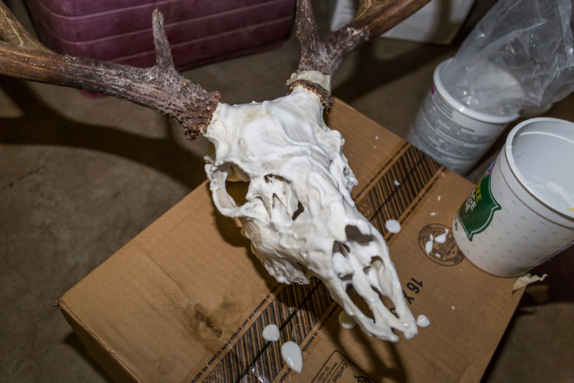

European Skull Mount
European Skull Mount
Dylan Snyder
Here is a easy way to create a do-it-yourself european skull mount.
A finished european elk mount.
What You'll Need
| Tools |
Ingredients |
| High-pressure Burner |
Box of Baking Soda |
| Propane tank |
Volume 40 Cream |
| Large pot |
High strength soap |
| Detailing brush |
Basic White |
| Rubber gloves |
| Knife |
| Garden hose |
Bubble wrap |
| Masking tape |
| Electric heater |
Instructions
- Start by skinning the head and removing the lower jaw. This is best done in the field.
- Add a large amount of soap to water and bring to a simmer
- Put skull into the pot so that the base of the antlers are just above the water. let sit for one hour.
- Remove skull from water and cut away any remaining tissue.
- Bring a new pot of water to a simmer, and add baking soda.
- Place skull back into the pot and let sit for another hour.
- Take skull out of the water. Spray with high pressure attachment to wash away loose tissue.
- Soak skull in clean pot of warm soapy water for 10 minutes
- Let skull dry in front of electric heater until completly dry.
- Mix Volume 40 and Basic White together until it thickens
- Apply mixture liberally to skull with brush. Make sure to get every little piece of skull, and don't get any on the antlers.

- Let sit for an hour and a half.
- Wash mixture off skull, and dry with heater. You are then finished